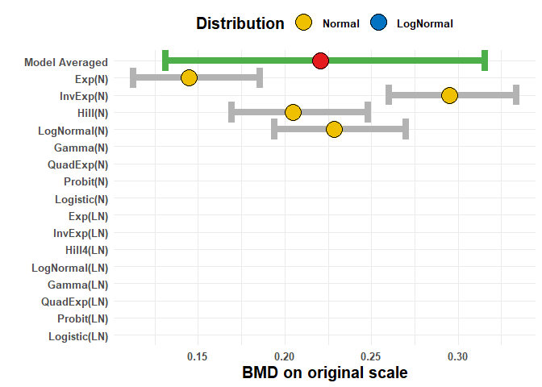
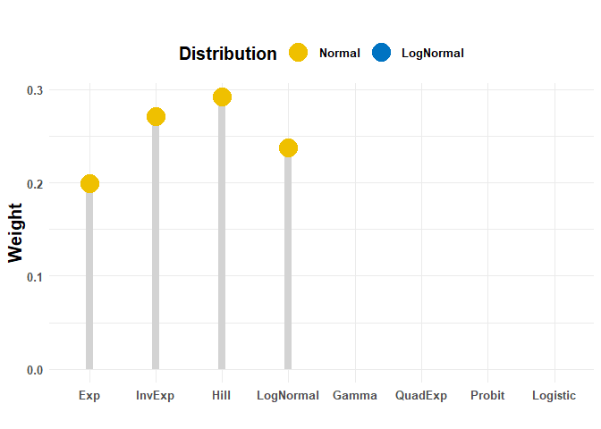
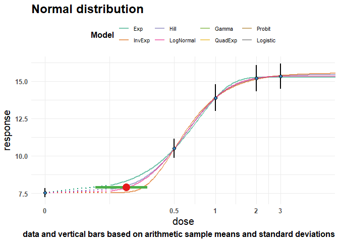
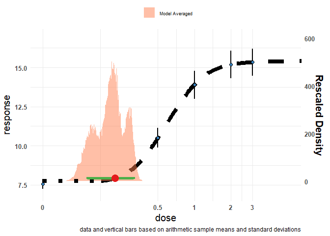

BMABMDR is an R package for Bayesian model averaging in benchmark dose estimation. Its two main functions are:
full.laplace_MA() to perform model averaging using Laplace approximation
sampling_MA() to perform model averaging using Bridge sampling
You can install the development version of BMABMDR from GitHub with:
# install.packages("devtools")
devtools::install_github("cecilekremer/BMABMDR")This is a basic example which shows you how to use the package:
library(BMABMDR)
## Set summary data
summ.data <- data.frame(x = c(0,0.5,1,2,3),
y = c(7.534954, 10.500018, 13.886423, 15.192057, 15.331456),
s = c(0.3131743, 0.6299896, 0.8874875, 0.8709575, 0.8501652),
n = c(20, 20, 20, 20, 20))
## Check if there is a dose-response effect
anydoseresponseN(summ.data$x, summ.data$y, summ.data$s, summ.data$n)
#> $bf
#> Estimated Bayes factor in favor of bridge_H0 over bridge_SM: 0.00000
#>
#> $bf.message
#> [1] "there is sufficient evidence that there is a substantial dose-effect"
anydoseresponseLN(summ.data$x, summ.data$y, summ.data$s, summ.data$n)
#> $bf
#> Estimated Bayes factor in favor of bridge_H0 over bridge_SM: 0.00000
#>
#> $bf.message
#> [1] "there is sufficient evidence that there is a substantial dose-effect"
## Prepare data to pass to main functions
data_N <- PREP_DATA_N(data = summ.data,
sumstats = TRUE, sd = TRUE, q = 0.05)
#> GAMLSS-RS iteration 1: Global Deviance = -8.2198
#> GAMLSS-RS iteration 2: Global Deviance = -8.2198
#> Default prior choices used on background
#> Default prior choices used on fold change
#> Default prior choices used on BMD
#> GAMLSS-RS iteration 1: Global Deviance = 4.4297
#> GAMLSS-RS iteration 2: Global Deviance = 4.4297
#> new prediction
#> new prediction
#> new prediction
#> new prediction
#> new prediction
#> new prediction
data_LN <- PREP_DATA_LN(data = summ.data,
sumstats = TRUE, sd = TRUE, q = 0.05)
#> Distributional assumption of constant variance (on log-scale) are met, Bartlett test p-value is 0.4557
#> GAMLSS-RS iteration 1: Global Deviance = -8.2198
#> GAMLSS-RS iteration 2: Global Deviance = -8.2198
#> Default prior choices used on background
#> Default prior choices used on fold change
#> Default prior choices used on BMD
#> GAMLSS-RS iteration 1: Global Deviance = 4.4297
#> GAMLSS-RS iteration 2: Global Deviance = 4.4297
#> new prediction
#> new prediction
#> new prediction
#> new prediction
#> new prediction
#> new prediction
## Perform model averaging using Laplace approximation
# We include only Family 1 for the Normal distribution in this example
FLBMD <- full.laplace_MA(data_N, data_LN, prior.weights = c(rep(1, 4), rep(0, 12)))
#> BMDL BMD BMDU
#> 0.1310523 0.2205689 0.3156180
#> [1] "Best fitting model fits sufficiently well (Bayes factor is 9.84e+00)."
# Plot results
pFLBMD <- plot.BMADR(FLBMD, type = 'increasing', weight_type = 'LP', title = '')
pFLBMD$BMDs
pFLBMD$weights
pFLBMD$model_fit_N
pFLBMD$MA_fit
## Perform model averaging using Bridge sampling
SBMD <- sampling_MA(data_N, data_LN, prior.weights = c(rep(1, 4), rep(0, 12)))
#> convergence achieved.
#> convergence achieved.
#>
#> convergence achieved.
#>
#> convergence achieved.
#> [1] "Best fitting model fits sufficiently well (Bayes factor is 9.09e+00)."
# Plot results
pSBMD <- plot.BMADR(SBMD, type = 'increasing', weight_type = 'BS', title = '')If you encounter a bug, please file an issue with a minimal reproducible example on GitHub.